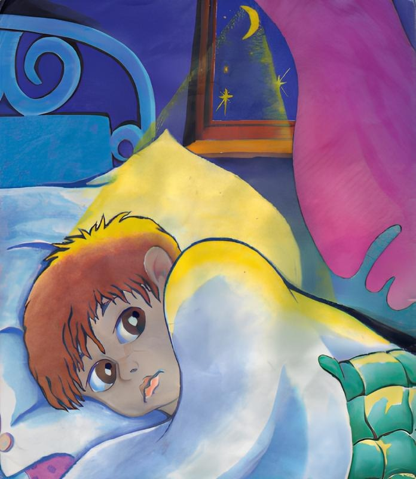

Чего боялся Петя
Самуил Маршак
Темноты боится Петя.
Петя маме говорит:
— Можно, мама, спать при свете?
Пусть всю ночь огонь горит.
Отвечает мама: — Нет! —
Щелк — и выключила свет.
Стало тихо и темно.
Свежий ветер дул в окно.
В темноте увидел Петя
Человека у стены.
Оказалось на рассвете —
Это куртка и штаны.
Рукавами, как руками,
Куртка двигала слегка,
А штаны плясали сами
От ночного ветерка.
В темноте увидел Петя
Ступу с бабою-ягой.
Оказалось на рассвете —
Это печка с кочергой.
Это печь,
А не яга,
Не нога,
А кочерга
В темноте увидел Петя:
Сверху смотрит великан.
Оказалось на рассвете —
Это старый чемодан.
Высоко — на крышу шкала —
Чемодан поставил папа,
И светились два замка
При луне, как два зрачка.
Каждый раз при встрече с Петей
Говорят друг другу дети:
— Это — Петя Иванов.
Испугался он штанов!
Испугался он яги —
Старой ржавой кочерги!
На дворе услышал Петя,
Как над ним смеются дети.
— Нет,- сказал он,- я не трус!
Темноты я не боюсь!
С этих пор ни разу Петя
Не ложился спать при свете.
Чемоданы и штаны
Пете больше не страшны.
Да и вам, другие дети,
Спать не следует при свете.
Для того чтоб видеть сны,
Лампы вовсе не нужны!